SpringBoot基础
1. Web分析
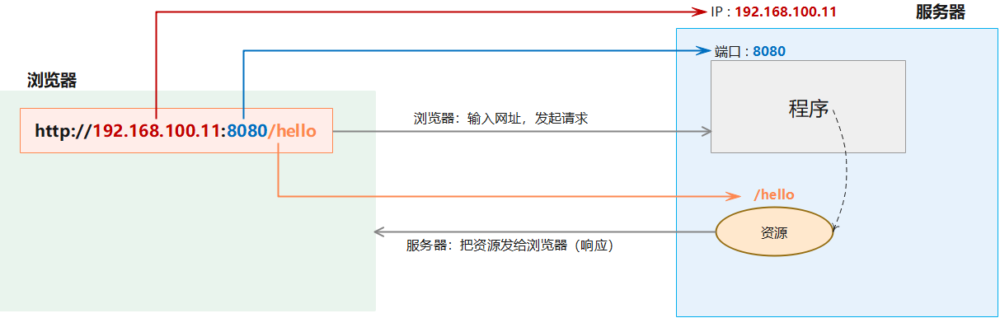
浏览器：
-
输入网址：
http://192.168.100.11:8080/hello-
通过IP地址192.168.100.11定位到网络上的一台计算机
我们之前在浏览器中输入的localhost，就是127.0.0.1（本机）
-
通过端口号8080找到计算机上运行的程序
localhost:8080, 意思是在本地计算机中找到正在运行的8080端口的程序 -
/hello是请求资源位置
- 资源：对计算机而言资源就是数据
- web资源：通过网络可以访问到的资源（通常是指存放在服务器上的数据）
localhost:8080/hello，意思是向本地计算机中的8080端口程序，获取资源位置是/hello的数据- 8080端口程序，在服务器找/hello位置的资源数据，发给浏览器
- 资源：对计算机而言资源就是数据
-
服务器：（可以理解为ServerSocket）
- 接收到浏览器发送的信息（如：/hello）
- 在服务器上找到/hello的资源
- 把资源发送给浏览器
我们在JavaSE阶段学习网络编程时，有讲过网络三要素：
- IP ：网络中计算机的唯一标识
- 端口 ：计算机中运行程序的唯一标识
- 协议 ：网络中计算机之间交互的规则
问题：浏览器和服务器两端进行数据交互，使用什么协议？
答案：http协议
2. ==HTTP协议==
2.1 HTTP-概述
2.1.1 介绍
HTTP：Hyper Text Transfer Protocol(超文本传输协议)，规定了浏览器与服务器之间数据传输的规则。
- http是互联网上应用最为广泛的一种网络协议
- http协议要求：浏览器在向服务器发送请求数据时，或是服务器在向浏览器发送响应数据时，都必须按照固定的格式进行数据传输
如果想知道http协议的数据传输格式有哪些，可以打开浏览器，点击F12打开开发者工具，点击Network来查看
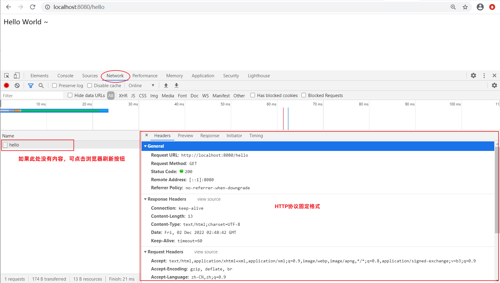
浏览器向服务器进行请求时：
- 服务器按照固定的格式进行解析
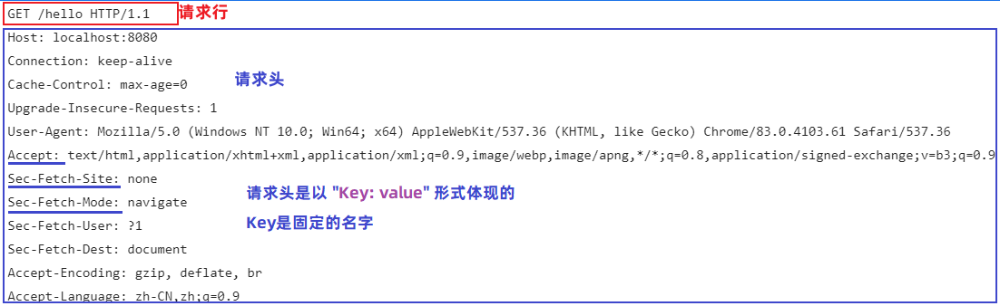
服务器向浏览器进行响应时：
- 浏览器按照固定的格式进行解析
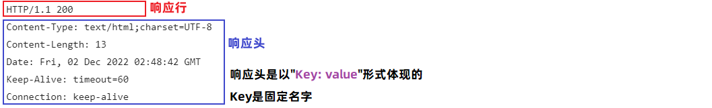
所以，我们学习HTTP主要就是学习请求和响应数据的具体格式内容。
2.2.2 ==特点==
我们刚才初步认识了HTTP协议，那么我们在看看HTTP协议有哪些特点：
-
**基于TCP协议: ** 面向连接，安全
TCP是一种面向连接的(建立连接之前是需要经过三次握手)、可靠的、基于字节流的传输层通信协议，在数据传输方面更安全
-
基于请求-响应模型: 一次请求对应一次响应（先请求后响应）
请求和响应是一一对应关系，没有请求，就没有响应
-
HTTP协议是无状态协议: 对于数据没有记忆能力。每次请求-响应都是独立的
无状态指的是客户端发送HTTP请求给服务端之后，服务端根据请求响应数据，响应完后，不会记录任何信息。
- 缺点: 多次请求间不能共享数据
- 优点: 速度快
请求之间无法共享数据会引发的问题：
- 如：京东购物。加入购物车和去购物车结算是两次请求
- 由于HTTP协议的无状态特性，加入购物车请求响应结束后，并未记录加入购物车是何商品
- 发起去购物车结算的请求后，因为无法获取哪些商品加入了购物车，会导致此次请求无法正确展示数据
具体使用的时候，我们发现京东是可以正常展示数据的，原因是Java早已考虑到这个问题，并提出了使用会话技术==(Cookie、Session)来解决这个问题==。具体如何来做，我们后面课程中会讲到。
刚才提到HTTP协议是规定了请求和响应数据的格式，那具体的格式是什么呢?
==2.2 HTTP-请求协议==
浏览器和服务器是按照HTTP协议进行数据通信的。
HTTP协议又分为：请求协议和响应协议
- 请求协议：浏览器将数据以请求格式发送到服务器
- 包括：请求行、请求头 、请求体
- 响应协议：服务器将数据以响应格式返回给浏览器
- 包括：响应行 、响应头 、响应体
在HTTP1.1版本中，浏览器访问服务器的几种方式：
| 请求方式 | 请求说明 |
|---|---|
| GET | 获取资源。 向特定的资源发出请求。例：http://www.baidu.com/s?wd=itheima |
| POST | 传输实体主体。 向指定资源提交数据进行处理请求（例：上传文件），数据被包含在请求体中。 |
| OPTIONS | 返回服务器针对特定资源所支持的HTTP请求方式。 因为并不是所有的服务器都支持规定的方法，为了安全有些服务器可能会禁止掉一些方法，例如：DELETE、PUT等。那么OPTIONS就是用来询问服务器支持的方法。 |
| HEAD | 获得报文首部。 HEAD方法类似GET方法，但是不同的是HEAD方法不要求返回数据。通常用于确认URI的有效性及资源更新时间等。 |
| PUT | 传输文件。 PUT方法用来传输文件。类似FTP协议，文件内容包含在请求报文的实体中，然后请求保存到URL指定的服务器位置。 |
| DELETE | 删除文件。 请求服务器删除Request-URI所标识的资源 |
| TRACE | 追踪路径。 回显服务器收到的请求，主要用于测试或诊断 |
| CONNECT | 要求用隧道协议连接代理。 HTTP/1.1协议中预留给能够将连接改为管道方式的代理服务器 |
在我们实际应用中常用的也就是 ：GET、POST
GET方式的请求协议：
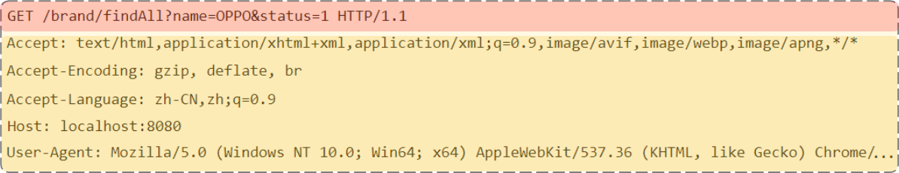
-
请求行 ：HTTP请求中的第一行数据。由：
请求方式、资源路径、协议/版本组成（之间使用空格分隔）- 请求方式：GET
- 资源路径：/brand/findAll?name=OPPO&status=1
- 请求路径：/brand/findAll
- 请求参数：name=OPPO&status=1
- 请求参数是以key=value形式出现
- 多个请求参数之间使用
&连接
- 请求路径和请求参数之间使用
?连接
- 协议/版本：HTTP/1.1
-
请求头 ：第二行开始，上图黄色部分内容就是请求头。格式为key: value形式
- http是个无状态的协议，所以在请求头设置浏览器的一些自身信息和想要响应的形式。这样服务器在收到信息后，就可以知道是谁，想干什么了
常见的HTTP请求头有:
Host: 表示请求的主机名 User-Agent: 浏览器版本。 例如：Chrome浏览器的标识类似Mozilla/5.0 ...Chrome/79 ，IE浏览器的标识类似Mozilla/5.0 (Windows NT ...)like Gecko Accept：表示浏览器能接收的资源类型，如text/*，image/*或者*/*表示所有； Accept-Language：表示浏览器偏好的语言，服务器可以据此返回不同语言的网页； Accept-Encoding：表示浏览器可以支持的压缩类型，例如gzip, deflate等。 Content-Type：请求主体的数据类型 Content-Length：数据主体的大小（单位：字节）
举例说明：服务端可以根据请求头中的内容来获取客户端的相关信息，有了这些信息服务端就可以处理不同的业务需求。
比如:
- 不同浏览器解析HTML和CSS标签的结果会有不一致，所以就会导致相同的代码在不同的浏览器会出现不同的效果
- 服务端根据客户端请求头中的数据获取到客户端的浏览器类型，就可以根据不同的浏览器设置不同的代码来达到一致的效果（这就是我们常说的浏览器兼容问题）
- 请求体 ：存储请求参数
- GET请求的请求参数在请求行中，故不需要设置请求体
POST方式的请求协议：
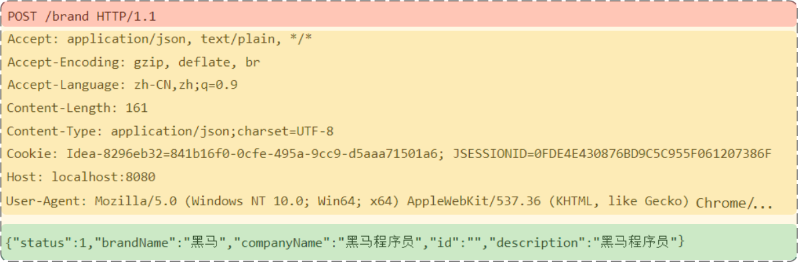
- 请求行(以上图中红色部分)：包含请求方式、资源路径、协议/版本
- 请求方式：POST
- 资源路径：/brand
- 协议/版本：HTTP/1.1
- 请求头(以上图中黄色部分)
- 请求体(以上图中绿色部分) ：存储请求参数
- 请求体和请求头之间是有一个空行隔开（作用：用于标记请求头结束）
GET请求和POST请求的区别：
| 区别方式 | GET请求 | POST请求 |
|---|---|---|
| 请求参数 | 请求参数在请求行中。 例：/brand/findAll?name=OPPO&status=1 |
请求参数在请求体中 |
| 请求参数长度 | 请求参数长度有限制(浏览器不同限制也不同) | 请求参数长度没有限制 |
| 安全性 | 安全性低。原因：请求参数暴露在浏览器地址栏中。 | 安全性相对高 |
2.3 HTTP-响应协议
2.3.1 格式介绍
与HTTP的请求一样，HTTP响应的数据也分为3部分：响应行、响应头 、响应体
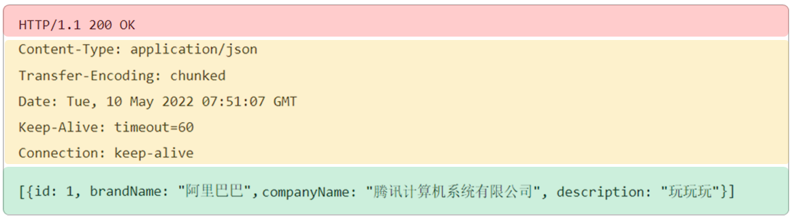
-
响应行(以上图中红色部分)：响应数据的第一行。响应行由
协议及版本、响应状态码、状态码描述组成- 协议/版本：HTTP/1.1
- 响应状态码：200
- 状态码描述：OK
-
响应头(以上图中黄色部分)：响应数据的第二行开始。格式为key：value形式
- http是个无状态的协议，所以可以在请求头和响应头中设置一些信息和想要执行的动作，这样，对方在收到信息后，就可以知道你是谁，你想干什么
常见的HTTP响应头有:
Content-Type：表示该响应内容的类型，例如text/html，image/jpeg ； Content-Length：表示该响应内容的长度（字节数）； Content-Encoding：表示该响应压缩算法，例如gzip ； Cache-Control：指示客户端应如何缓存，例如max-age=300表示可以最多缓存300秒 ; Set-Cookie: 告诉浏览器为当前页面所在的域设置cookie ;
- 响应体(以上图中绿色部分)： 响应数据的最后一部分。存储响应的数据
- 响应体和响应头之间有一个空行隔开（作用：用于标记响应头结束）
2.3.2 响应状态码
| 状态码分类 | 说明 |
|---|---|
| 1xx | 响应中 — 临时状态码。表示请求已经接受，告诉客户端应该继续请求或者如果已经完成则忽略 |
| 2xx | 成功 — 表示请求已经被成功接收，处理已完成 |
| 3xx | 重定向 — 重定向到其它地方，让客户端再发起一个请求以完成整个处理 |
| 4xx | 客户端错误 — 处理发生错误，责任在客户端，如：客户端的请求一个不存在的资源，客户端未被授权，禁止访问等 |
| 5xx | 服务器端错误 — 处理发生错误，责任在服务端，如：服务端抛出异常，路由出错，HTTP版本不支持等 |
参考: 资料/SpringbootWeb/响应状态码.md
关于响应状态码，我们先主要认识三个状态码，其余的等后期用到了再去掌握：
- 200 ok 客户端请求成功
- 404 Not Found 请求资源不存在
- 500 Internal Server Error 服务端发生不可预期的错误
2.4 HTTP-协议解析
将资料中准备好的Demo工程，导入到我们的IDEA中，有一个Server.java类，这里面就是自定义的一个服务器代码，主要使用到的是ServerSocket和Socket
==说明：以下代码大家不需要自己写，我们主要是通过代码，让大家了解到服务器针对HTTP协议的解析机制==
package com.itheima;
import java.io.*;
import java.net.ServerSocket;
import java.net.Socket;
import java.nio.charset.StandardCharsets;
/*
* 自定义web服务器
*/
public class Server {
public static void main(String[] args) throws IOException {
ServerSocket ss = new ServerSocket(8080); // 监听指定端口
System.out.println("server is running...");
while (true){
Socket sock = ss.accept();
System.out.println("connected from " + sock.getRemoteSocketAddress());
Thread t = new Handler(sock);
t.start();
}
}
}
class Handler extends Thread {
Socket sock;
public Handler(Socket sock) {
this.sock = sock;
}
public void run() {
try (InputStream input = this.sock.getInputStream();
OutputStream output = this.sock.getOutputStream()) {
handle(input, output);
} catch (Exception e) {
try {
this.sock.close();
} catch (IOException ioe) {
}
System.out.println("client disconnected.");
}
}
private void handle(InputStream input, OutputStream output) throws IOException {
BufferedReader reader = new BufferedReader(new InputStreamReader(input, StandardCharsets.UTF_8));
BufferedWriter writer = new BufferedWriter(new OutputStreamWriter(output, StandardCharsets.UTF_8));
// 读取HTTP请求:
boolean requestOk = false;
String first = reader.readLine();
if (first.startsWith("GET / HTTP/1.")) {
requestOk = true;
}
for (;;) {
String header = reader.readLine();
if (header.isEmpty()) { // 读取到空行时, HTTP Header读取完毕
break;
}
System.out.println(header);
}
System.out.println(requestOk ? "Response OK" : "Response Error");
if (!requestOk) {// 发送错误响应:
writer.write("HTTP/1.0 404 Not Found\r\n");
writer.write("Content-Length: 0\r\n");
writer.write("\r\n");
writer.flush();
} else {// 发送成功响应:
//读取html文件，转换为字符串
InputStream is = Server.class.getClassLoader().getResourceAsStream("html/a.html");
BufferedReader br = new BufferedReader(new InputStreamReader(is));
StringBuilder data = new StringBuilder();
String line = null;
while ((line = br.readLine()) != null){
data.append(line);
}
br.close();
int length = data.toString().getBytes(StandardCharsets.UTF_8).length;
writer.write("HTTP/1.1 200 OK\r\n");
writer.write("Connection: keep-alive\r\n");
writer.write("Content-Type: text/html\r\n");
writer.write("Content-Length: " + length + "\r\n");
writer.write("\r\n"); // 空行标识Header和Body的分隔
writer.write(data.toString());
writer.flush();
}
}
}
启动ServerSocket程序：
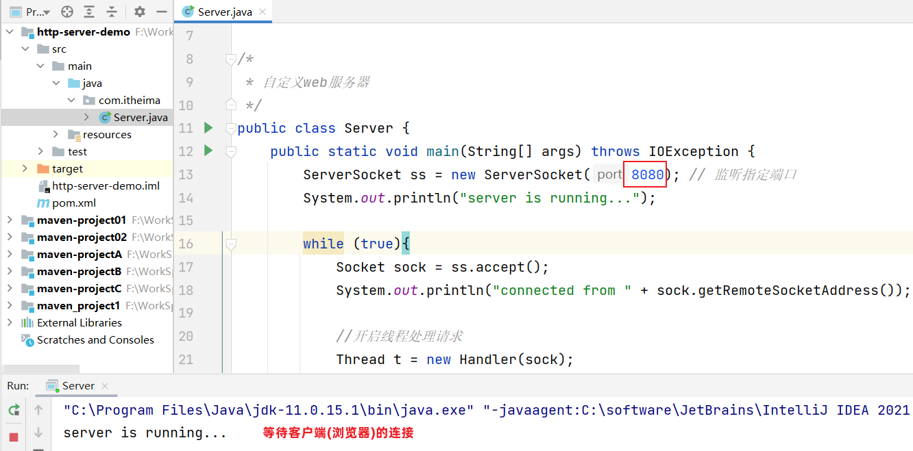
浏览器输入：http://localhost:8080 就会访问到ServerSocket程序
- ServerSocket程序，会读取服务器上
html/a.html文件，并把文件数据发送给浏览器 - 浏览器接收到a.html文件中的数据后进行解析，显示以下内容
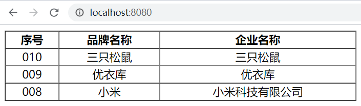
现在大家知道了服务器是可以使用java完成编写，是可以接受页面发送的请求和响应数据给前端浏览器的，而在开发中真正用到的Web服务器，我们不会自己写的，都是使用目前比较流行的web服务器。如：Tomcat
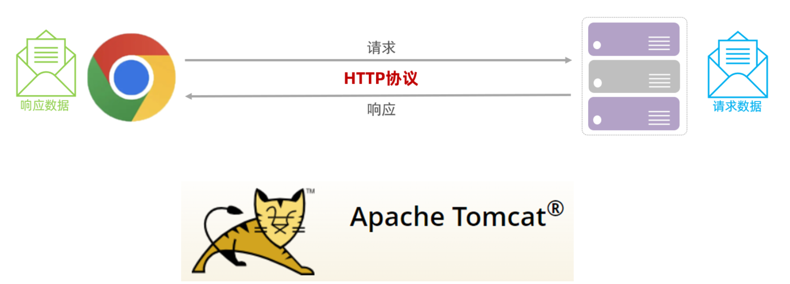
3. WEB服务器-Tomcat
3.1 简介
3.1.1 服务器概述
服务器硬件
- 指的也是计算机，只不过服务器要比我们日常使用的计算机大很多。
服务器，也称伺服器。是提供计算服务的设备。由于服务器需要响应服务请求，并进行处理，因此一般来说服务器应具备承担服务并且保障服务的能力。
服务器的构成包括处理器、硬盘、内存、系统总线等，和通用的计算机架构类似，但是由于需要提供高可靠的服务，因此在处理能力、稳定性、可靠性、安全性、可扩展性、可管理性等方面要求较高。
在网络环境下，根据服务器提供的服务类型不同，可分为：文件服务器，数据库服务器，应用程序服务器，WEB服务器等。
服务器只是一台设备，必须安装服务器软件才能提供相应的服务。
服务器软件
服务器软件：基于ServerSocket编写的程序
- 服务器软件本质是一个运行在服务器设备上的应用程序
- 能够接收客户端请求，并根据请求给客户端响应数据
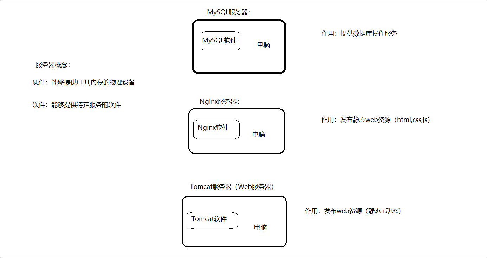
3.1.2 Web服务器
Web服务器是一个应用程序(软件)，对HTTP协议的操作进行封装，使得程序员不必直接对协议进行操作(不用程序员自己写代码去解析http协议规则)，让Web开发更加便捷。主要功能是"提供网上信息浏览服务"。
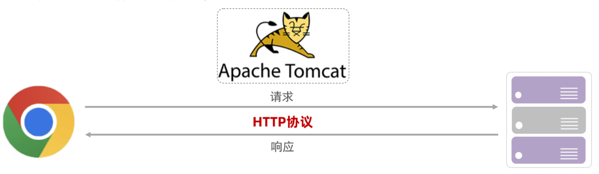
Web服务器是安装在服务器端的一款软件，将来我们把自己写的Web项目部署到Tomcat服务器软件中，当Web服务器软件启动后，部署在Web服务器软件中的页面就可以直接通过浏览器来访问了。
Web服务器软件使用步骤
- 准备静态资源
- 下载安装Web服务器软件
- 将静态资源部署到Web服务器上
- 启动Web服务器使用浏览器访问对应的资源
第1步：准备静态资源
- 在提供的资料中找到静态资源文件
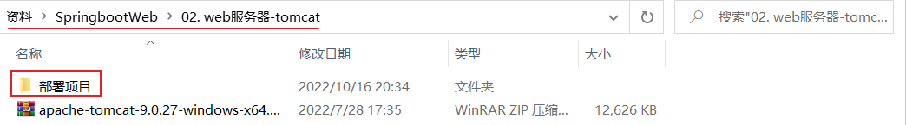
第2步：下载安装Web服务器软件
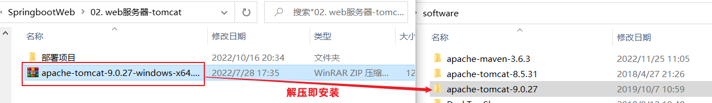
第3步：将静态资源部署到Web服务器上
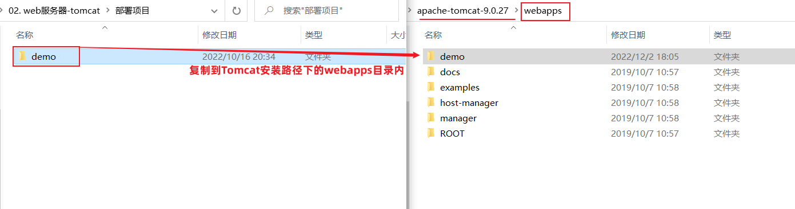
第4步：启动Web服务器使用浏览器访问对应的资源
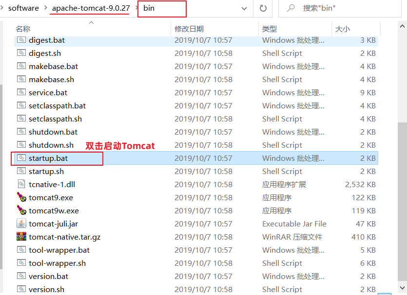
浏览器输入：http://localhost:8080/demo/index.html
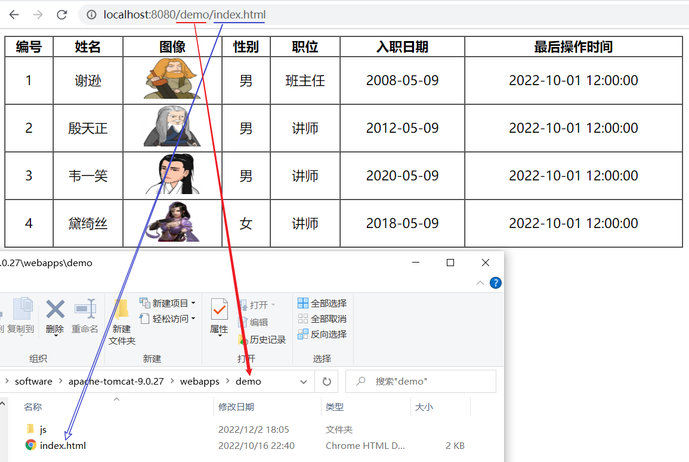
上述内容在演示的时候，使用的是Apache下的Tomcat软件，至于Tomcat软件如何使用，后面会详细的讲到。而对于Web服务器来说，实现的方案有很多，Tomcat只是其中的一种，而除了Tomcat以外，还有很多优秀的Web服务器，比如:
Tomcat就是一款软件，我们主要是以学习如何去使用为主。具体我们会从以下这些方向去学习:
-
简介：初步认识下Tomcat
-
基本使用: 安装、卸载、启动、关闭、配置和项目部署，这些都是对Tomcat的基本操作
-
IDEA中如何创建Maven Web项目
-
IDEA中如何使用Tomcat,后面这两个都是我们以后开发经常会用到的方式
首选我们来认识下Tomcat。
3.1.3 Tomcat
Tomcat服务器软件是一个免费的开源的web应用服务器。是Apache软件基金会的一个核心项目。由Apache，Sun和其他一些公司及个人共同开发而成。
由于Tomcat只支持Servlet/JSP少量JavaEE规范，所以是一个开源免费的轻量级Web服务器。
JavaEE规范： JavaEE => Java Enterprise Edition(Java企业版)
JavaEE规范就是指Java企业级开发的技术规范总和。包含13项技术规范：JDBC、JNDI、EJB、RMI、JSP、Servlet、XML、JMS、Java IDL、JTS、JTA、JavaMail、JAF
因为Tomcat支持Servlet/JSP规范，所以Tomcat也被称为Web容器、Servlet容器。JavaWeb程序需要依赖Tomcat才能运行。
Tomcat的官网: https://tomcat.apache.org/
3.2 基本使用
3.2.1 常见问题
问题1：Tomcat启动时，窗口一闪而过
- 检查JAVA_HOME环境变量是否正确配置
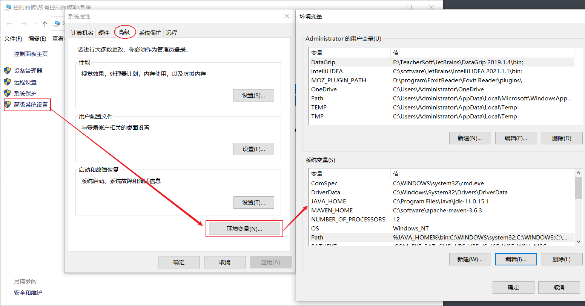
问题2：端口号冲突
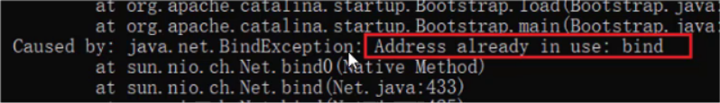
-
发生问题的原因：Tomcat使用的端口被占用了。
-
解决方案：换Tomcat端口号
- 要想修改Tomcat启动的端口号，需要修改 conf/server.xml文件
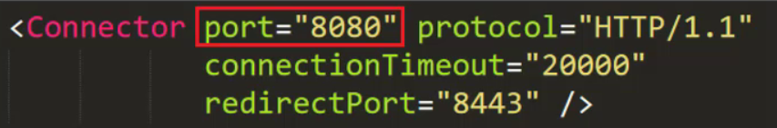
注: HTTP协议默认端口号为80，如果将Tomcat端口号改为80，则将来访问Tomcat时，将不用输入端口号。
3.3 入门程序解析
关于web开发的基础知识，我们可以告一段落了。下面呢，我们在基于今天的核心技术点SpringBoot快速入门案例进行分析。
3.3.1 Spring官方骨架
之前我们创建的SpringBoot入门案例，是基于Spring官方提供的骨架实现的。
Spring官方骨架，可以理解为Spring官方为程序员提供一个搭建项目的模板。
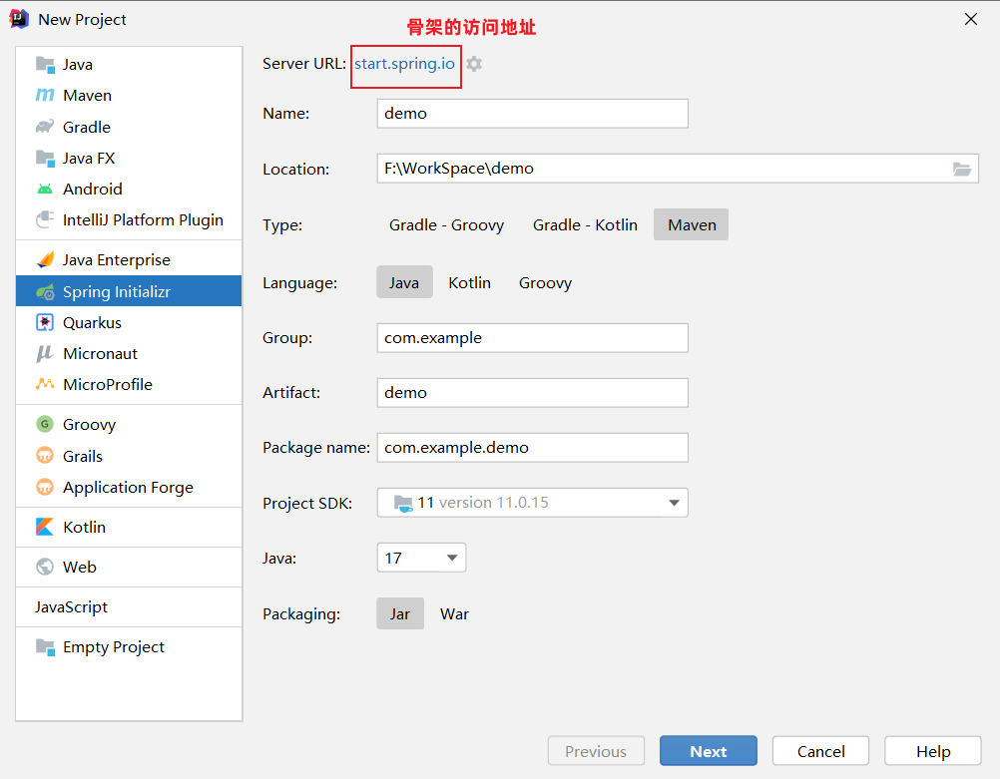
我们可以通过访问：https://start.spring.io/ ，进入到官方骨架页面
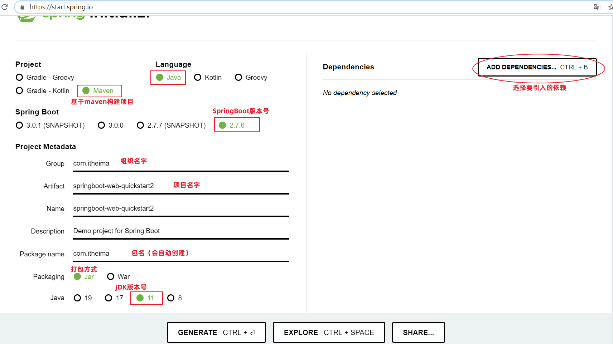
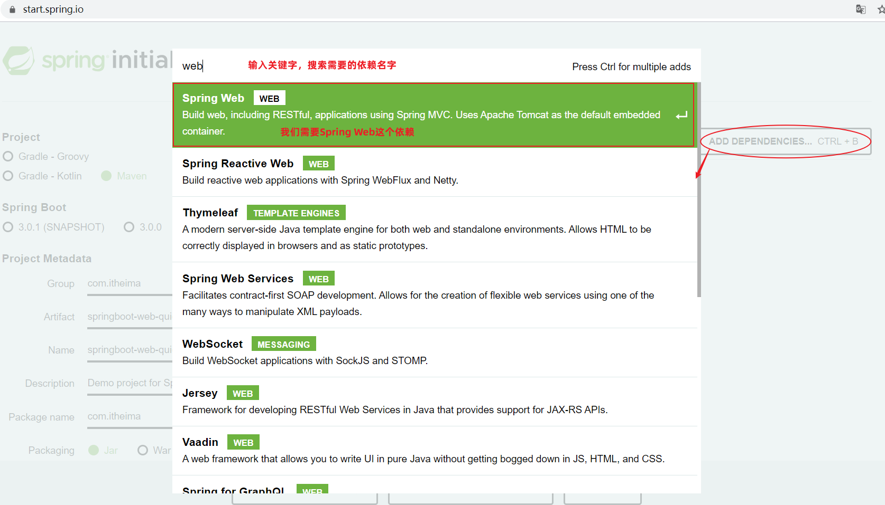
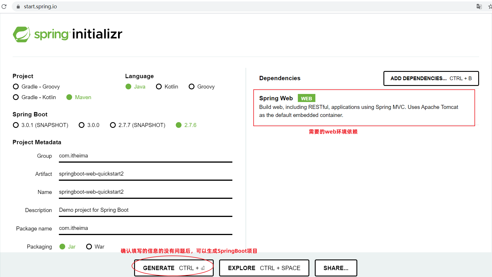
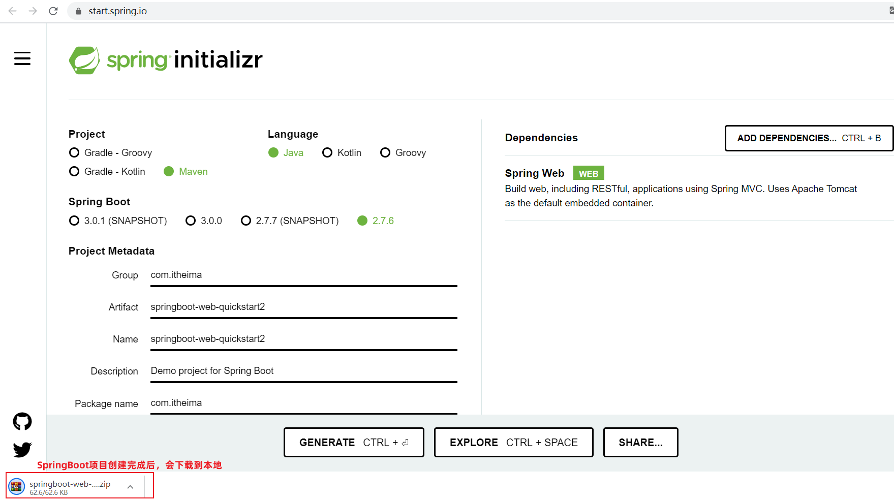
Spring官方生成的SpringBoot项目，怎么使用呢？
- 解压缩后，就会得到一个SpringBoot项目工程
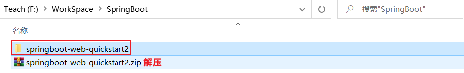
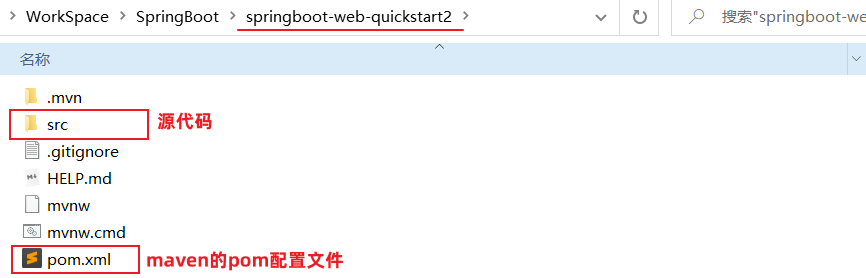
打开pom.xml文件，我们可以看到springboot项目中引入了web依赖和test依赖
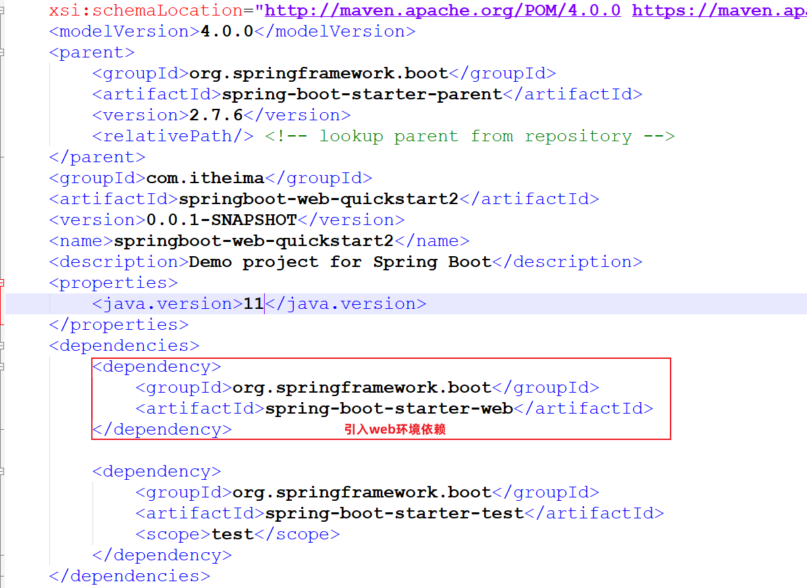
结论：不论使用IDEA创建SpringBoot项目，还是直接在官方网站利用骨架生成SpringBoot项目，项目的结构和pom.xml文件中内容是相似的。
3.3.2 起步依赖
在我们之前讲解的SpringBoot快速入门案例中，同样也引用了：web依赖和test依赖
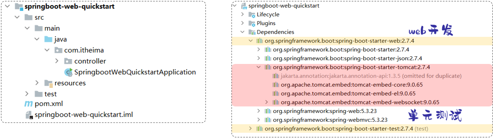
spring-boot-starter-web和spring-boot-starter-test，在SpringBoot中又称为：起步依赖
而在SpringBoot的项目中，有很多的起步依赖，他们有一个共同的特征：就是以spring-boot-starter-作为开头。在以后大家遇到spring-boot-starter-xxx这类的依赖，都为起步依赖。
起步依赖有什么特殊之处呢，这里我们以入门案例中引入的起步依赖做为讲解：
- spring-boot-starter-web：包含了web应用开发所需要的常见依赖
- spring-boot-starter-test：包含了单元测试所需要的常见依赖
spring-boot-starter-web内部把关于Web开发所有的依赖都已经导入并且指定了版本，只需引入
spring-boot-starter-web依赖就可以实现Web开发的需要的功能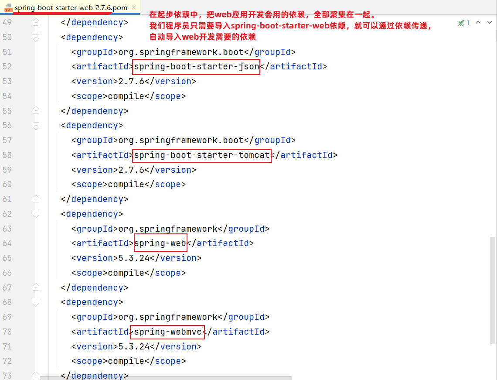
Spring的官方提供了很多现成的starter(起步依赖)，我们在开发相关应用时，只需要引入对应的starter即可。
官方地址：https://docs.spring.io/spring-boot/docs/2.7.2/reference/htmlsingle/#using.build-systems.starters
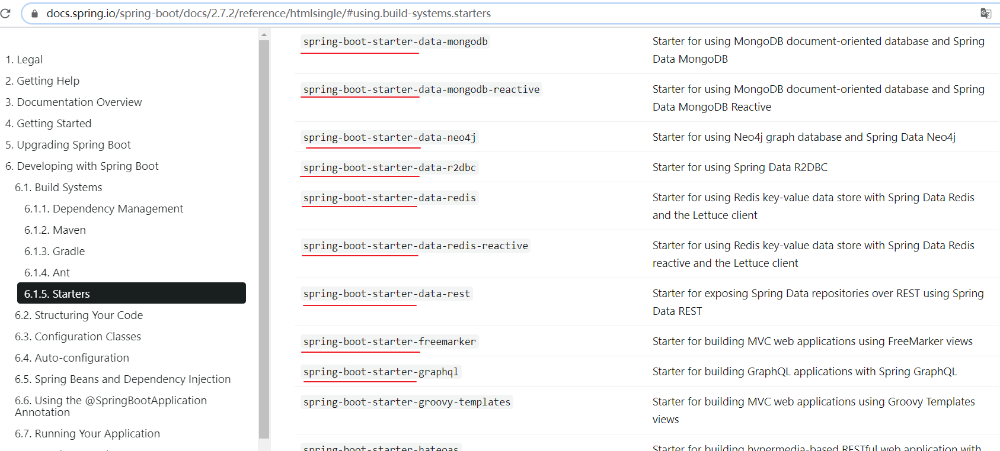
每一个起步依赖，都用于开发一个特定的功能。
举例：当我们开发中需要使用redis数据库时，只需要在SpringBoot项目中，引入：spring-boot-starter-redis ，即可导入redis开发所需要的依赖。
3.3.2 ==SpringBoot父工程==
在我们之前开发的SpringBoot入门案例中，我们通过maven引入的依赖，是没有指定具体的依赖版本号的。
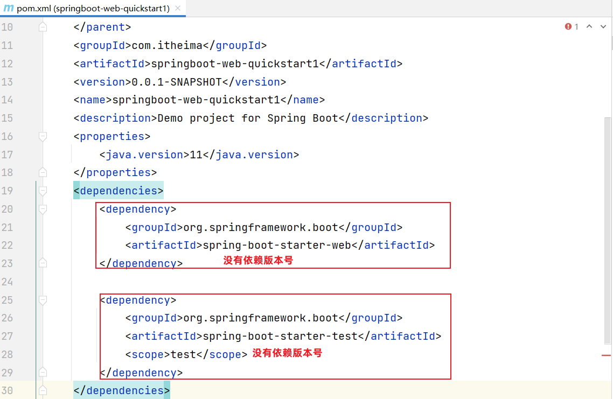
为什么没有指定
- 因为每一个SpringBoot工程，都有一个父工程。依赖的版本号，在父工程中统一管理。
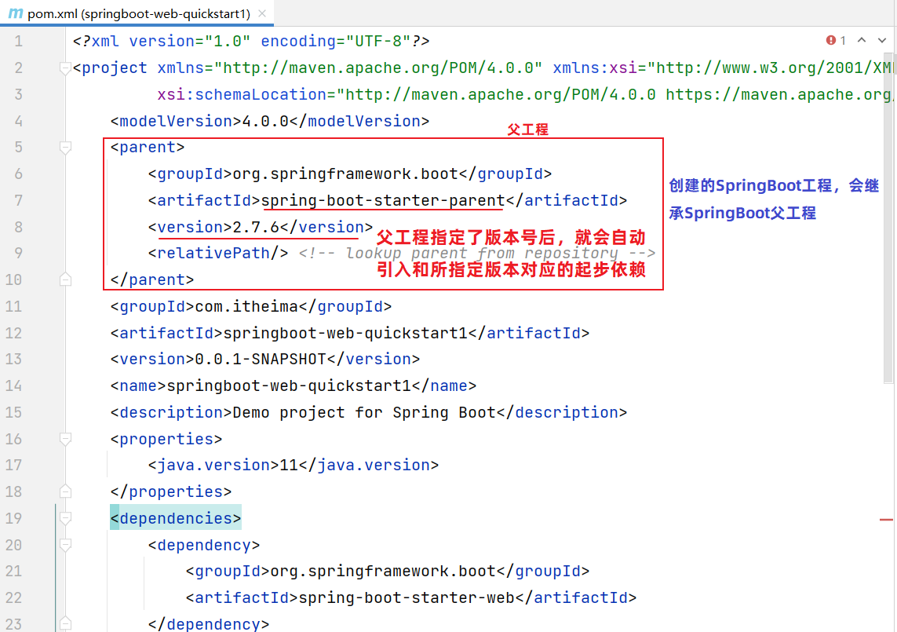
3.3.3 内嵌Tomcat
问题：为什么我们之前书写的SpringBoot入门程序中，并没有把程序部署到Tomcat的webapps目录下，也可以运行呢？
原因呢，是因为在我们的SpringBoot中，引入了web运行环境(也就是引入spring-boot-starter-web起步依赖)，其内部已经集成了内置的Tomcat服务器。
我们可以通过IDEA开发工具右侧的maven面板中，就可以看到当前工程引入的依赖。其中已经将Tomcat的相关依赖传递下来了，也就是说在SpringBoot中可以直接使用Tomcat服务器。
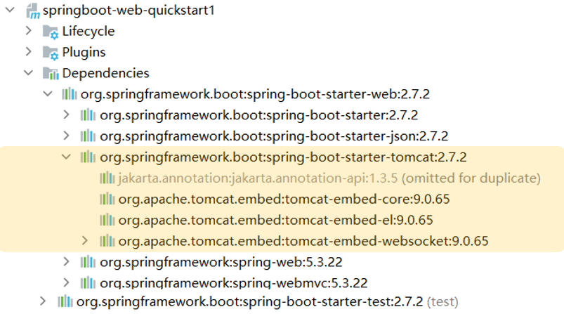
当我们运行SpringBoot的引导类时(运行main方法)，就会看到命令行输出的日志，其中占用8080端口的就是Tomcat。
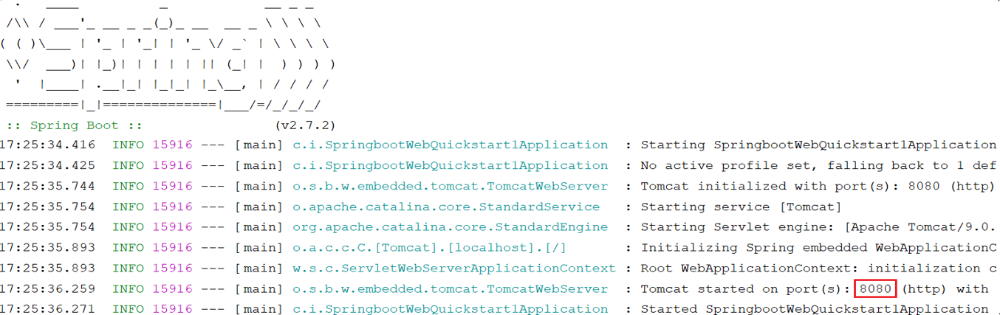
SpringBootWeb请求响应
前言
在上一次的课程中，我们开发了springbootweb的入门程序。 基于SpringBoot的方式开发一个web应用，浏览器发起请求 /hello 后 ，给浏览器返回字符串 “Hello World ~”。
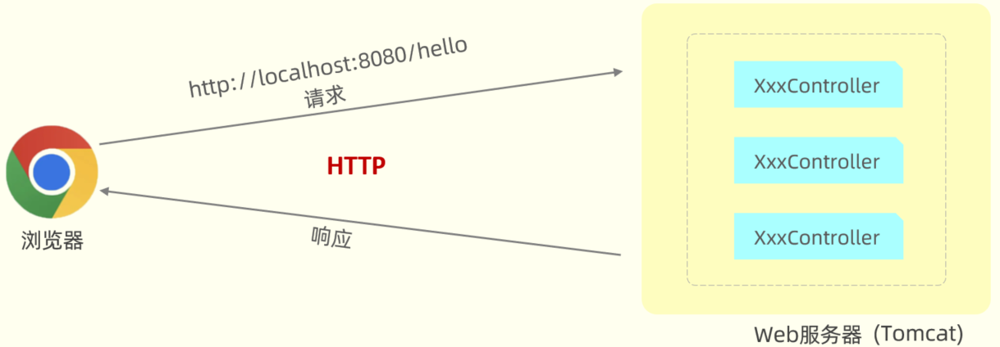
其实呢，是我们在浏览器发起请求，请求了我们的后端web服务器(也就是内置的Tomcat)。而我们在开发web程序时呢，定义了一个控制器类Controller，请求会被部署在Tomcat中的Controller接收，然后Controller再给浏览器一个响应，响应一个字符串 “Hello World”。 而在请求响应的过程中是遵循HTTP协议的。
但是呢，这里要告诉大家的时，其实在Tomcat这类Web服务器中，是不识别我们自己定义的Controller的。但是我们前面讲到过Tomcat是一个Servlet容器，是支持Serlvet规范的，所以呢，在tomcat中是可以识别 Servlet程序的。 那我们所编写的XxxController 是如何处理请求的，又与Servlet之间有什么联系呢？
其实呢，在SpringBoot进行web程序开发时，它内置了一个核心的Servlet程序 DispatcherServlet，称之为 核心控制器。 DispatcherServlet 负责接收页面发送的请求，然后根据执行的规则，将请求再转发给后面的请求处理器Controller，请求处理器处理完请求之后，最终再由DispatcherServlet给浏览器响应数据。
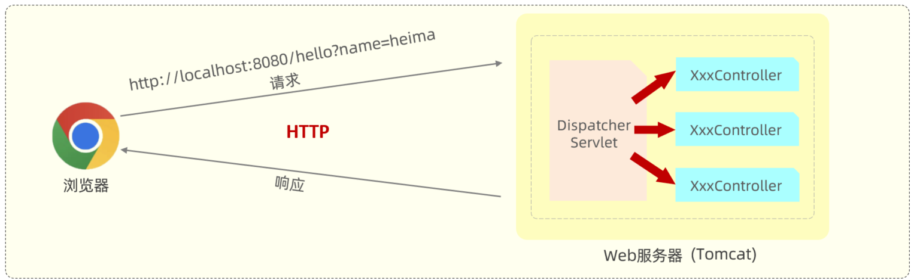
那将来浏览器发送请求，会携带请求数据，包括：请求行、请求头；请求到达tomcat之后，tomcat会负责解析这些请求数据，然后呢将解析后的请求数据会传递给Servlet程序的HttpServletRequest对象，那也就意味着 HttpServletRequest 对象就可以获取到请求数据。 而Tomcat，还给Servlet程序传递了一个参数 HttpServletResponse，通过这个对象，我们就可以给浏览器设置响应数据 。
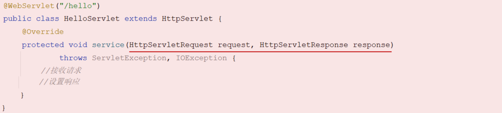
那上述所描述的这种浏览器/服务器的架构模式呢，我们称之为：BS架构。

• BS架构：Browser/Server，浏览器/服务器架构模式。客户端只需要浏览器，应用程序的逻辑和数据都存储在服务端。
那今天呢，我们的课程内容主要就围绕着：请求、响应进行。 今天课程内容，主要包含三个部分：
- 请求
- 响应
- 分层解耦
1. ==请求==
在本章节呢，我们主要讲解，如何接收页面传递过来的请求数据。
1.1 Postman
之前我们课程中有提到当前最为主流的开发模式：前后端分离
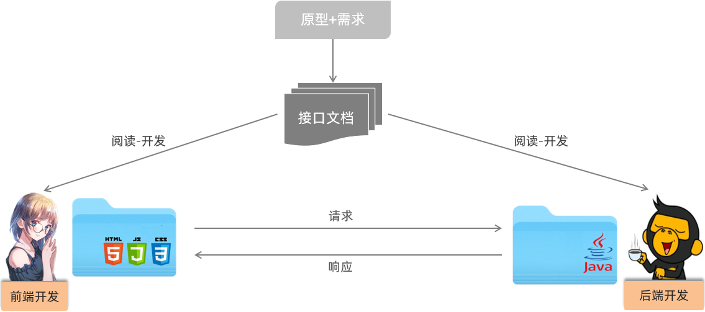
在这种模式下，前端技术人员基于"接口文档"，开发前端程序；后端技术人员也基于"接口文档"，开发后端程序。
由于前后端分离，对我们后端技术人员来讲，在开发过程中，是没有前端页面的，那我们怎么测试自己所开发的程序呢？
方式1：像之前SpringBoot入门案例中一样，直接使用浏览器。在浏览器中输入地址，测试后端程序。
- 弊端：在浏览器地址栏中输入地址这种方式都是GET请求，如何我们要用到POST请求怎么办呢？
- 要解决POST请求，需要程序员自己编写前端代码（比较麻烦）
方式2：使用专业的接口测试工具（课程中我们使用Postman工具）
1.2 简单参数
简单参数：在向服务器发起请求时，向服务器传递的是一些普通的请求数据。
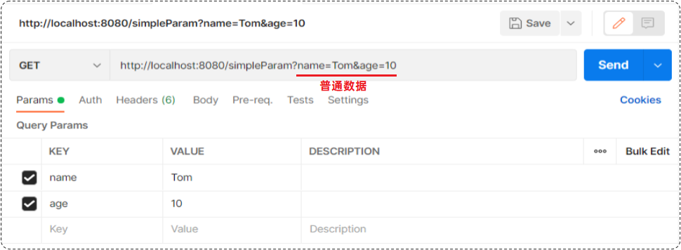
那么在后端程序中，如何接收传递过来的普通参数数据呢？
我们在这里讲解两种方式：
- 原始方式
- SpringBoot方式
1.2.1 原始方式
在原始的Web程序当中，需要通过Servlet中提供的API：HttpServletRequest（请求对象），获取请求的相关信息。比如获取请求参数：
Tomcat接收到http请求时：把请求的相关信息封装到HttpServletRequest对象中
在Controller中，我们要想获取Request对象，可以直接在方法的形参中声明 HttpServletRequest 对象。然后就可以通过该对象来获取请求信息：
//根据指定的参数名获取请求参数的数据值
String request.getParameter("参数名")
@RestController
public class RequestController {
//原始方式
@RequestMapping("/simpleParam")
public String simpleParam(HttpServletRequest request){
// http://localhost:8080/simpleParam?name=Tom&age=10
// 请求参数： name=Tom&age=10 （有2个请求参数）
// 第1个请求参数： name=Tom 参数名:name，参数值:Tom
// 第2个请求参数： age=10 参数名:age , 参数值:10
String name = request.getParameter("name");//name就是请求参数名
String ageStr = request.getParameter("age");//age就是请求参数名
int age = Integer.parseInt(ageStr);//需要手动进行类型转换
System.out.println(name+" : "+age);
return "OK";
}
}
以上这种方式，我们仅做了解。（在以后的开发中不会使用到）
1.2.2 SpringBoot方式
在Springboot的环境中，对原始的API进行了封装，接收参数的形式更加简单。 如果是简单参数，参数名与形参变量名相同，定义同名的形参即可接收参数。
@RestController
public class RequestController {
// http://localhost:8080/simpleParam?name=Tom&age=10
// 第1个请求参数： name=Tom 参数名:name，参数值:Tom
// 第2个请求参数： age=10 参数名:age , 参数值:10
//springboot方式
@RequestMapping("/simpleParam")
public String simpleParam(String name , Integer age ){//形参名和请求参数名保持一致
System.out.println(name+" : "+age);
return "OK";
}
}
postman测试( GET 请求)：

postman测试( POST请求 )：
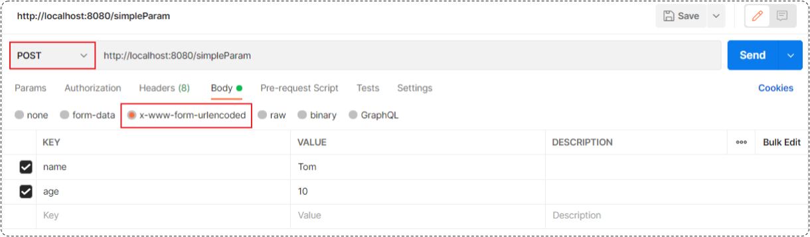
结论：不论是GET请求还是POST请求，对于简单参数来讲，只要保证==请求参数名和Controller方法中的形参名保持一致==，就可以获取到请求参数中的数据值。
1.2.3 ==参数名不一致==
如果方法形参名称与请求参数名称不一致，controller方法中的形参还能接收到请求参数值吗？
@RestController
public class RequestController {
// http://localhost:8080/simpleParam?name=Tom&age=20
// 请求参数名：name
//springboot方式
@RequestMapping("/simpleParam")
public String simpleParam(String username , Integer age ){//请求参数名和形参名不相同
System.out.println(username+" : "+age);
return "OK";
}
}
答案：运行没有报错。 controller方法中的username值为：null，age值为20
- 结论：对于简单参数来讲，请求参数名和controller方法中的形参名不一致时，无法接收到请求数据
那么如果我们开发中，遇到了这种请求参数名和controller方法中的形参名不相同，怎么办？
解决方案：可以使用Spring提供的@RequestParam注解完成映射
在方法形参前面加上 @RequestParam 然后通过value属性执行请求参数名，从而完成映射。代码如下：
@RestController
public class RequestController {
// http://localhost:8080/simpleParam?name=Tom&age=20
// 请求参数名：name
//springboot方式
@RequestMapping("/simpleParam")
public String simpleParam(@RequestParam("name") String username , Integer age ){
System.out.println(username+" : "+age);
return "OK";
}
}
注意事项：
@RequestParam中的required属性默认为true（默认值也是true），代表该请求参数必须传递，如果不传递将报错

如果该参数是可选的，可以将required属性设置为false
@RequestMapping("/simpleParam") public String simpleParam(@RequestParam(name = "name", required = false) String username, Integer age){ System.out.println(username+ ":" + age); return "OK"; }
1.3 实体参数
在使用简单参数做为数据传递方式时，前端传递了多少个请求参数，后端controller方法中的形参就要书写多少个。如果请求参数比较多，通过上述的方式一个参数一个参数的接收，会比较繁琐。
此时，我们可以考虑将请求参数封装到一个实体类对象中。 要想完成数据封装，需要遵守如下规则：请求参数名与实体类的属性名相同

1.3.1 ==简单实体对象==
定义POJO实体类：
public class User {
private String name;
private Integer age;
public String getName() {
return name;
}
public void setName(String name) {
this.name = name;
}
public Integer getAge() {
return age;
}
public void setAge(Integer age) {
this.age = age;
}
@Override
public String toString() {
return "User{" +
"name='" + name + '\'' +
", age=" + age +
'}';
}
}
Controller方法：
@RestController
public class RequestController {
//实体参数：简单实体对象
@RequestMapping("/simplePojo")
public String simplePojo(User user){
System.out.println(user);
return "OK";
}
}
Postman测试：
- 参数名和实体类属性名一致时
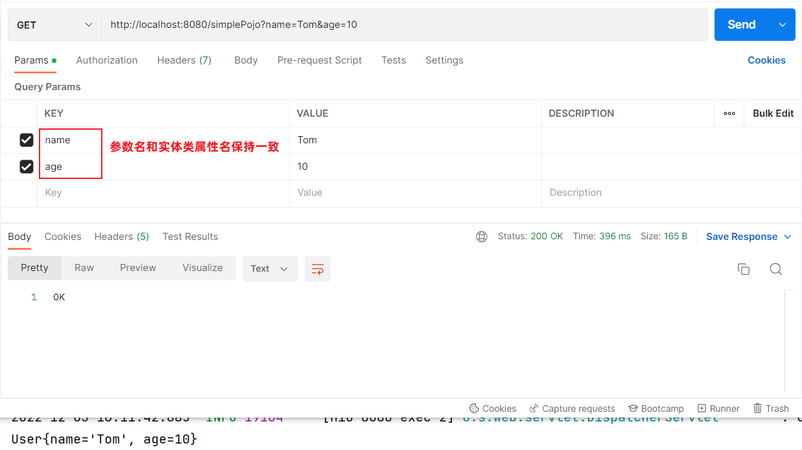
- 参数名和实体类属性名不一致时
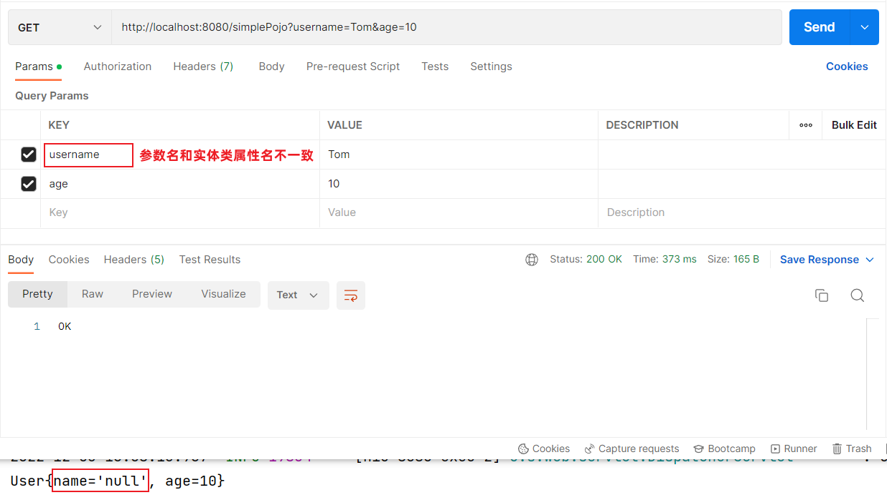
1.3.2 ==复杂实体对象==
上面我们讲的呢是简单的实体对象，下面我们在来学习下复杂的实体对象。
复杂实体对象指的是，在实体类中有一个或多个属性，也是实体对象类型的。如下：
- User类中有一个Address类型的属性（Address是一个实体类）

复杂实体对象的封装，需要遵守如下规则：
- 请求参数名与形参对象属性名相同，按照对象层次结构关系即可接收嵌套实体类属性参数。
定义POJO实体类：
- Address实体类
public class Address {
private String province;
private String city;
public String getProvince() {
return province;
}
public void setProvince(String province) {
this.province = province;
}
public String getCity() {
return city;
}
public void setCity(String city) {
this.city = city;
}
@Override
public String toString() {
return "Address{" +
"province='" + province + '\'' +
", city='" + city + '\'' +
'}';
}
}
- User实体类
public class User {
private String name;
private Integer age;
private Address address; //地址对象
public String getName() {
return name;
}
public void setName(String name) {
this.name = name;
}
public Integer getAge() {
return age;
}
public void setAge(Integer age) {
this.age = age;
}
public Address getAddress() {
return address;
}
public void setAddress(Address address) {
this.address = address;
}
@Override
public String toString() {
return "User{" +
"name='" + name + '\'' +
", age=" + age +
", address=" + address +
'}';
}
}
Controller方法：
@RestController
public class RequestController {
//实体参数：复杂实体对象
@RequestMapping("/complexPojo")
public String complexPojo(User user){
System.out.println(user);
return "OK";
}
}
Postman测试：
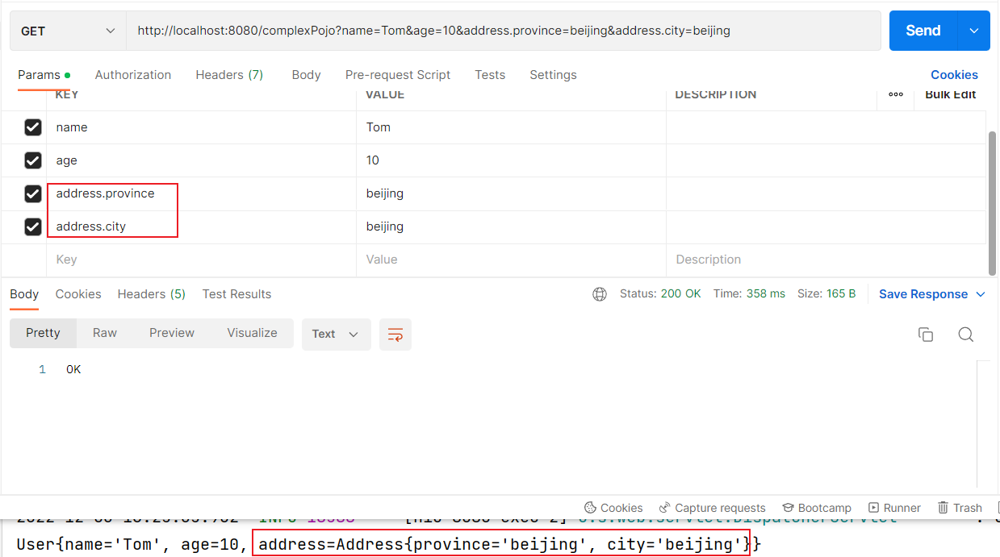
1.4 ==数组集合参数==
数组集合参数的使用场景：在HTML的表单中，有一个表单项是支持多选的(复选框)，可以提交选择的多个值。
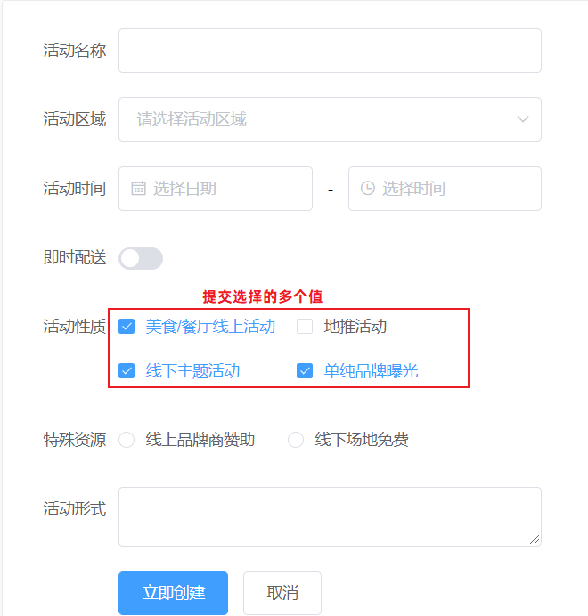
多个值是怎么提交的呢？其实多个值也是一个一个的提交。
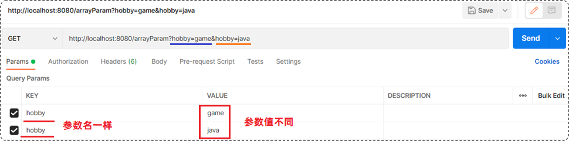
后端程序接收上述多个值的方式有两种：
- 数组
- 集合
1.4.1 数组
数组参数：请求参数名与形参数组名称相同且请求参数为多个，定义数组类型形参即可接收参数
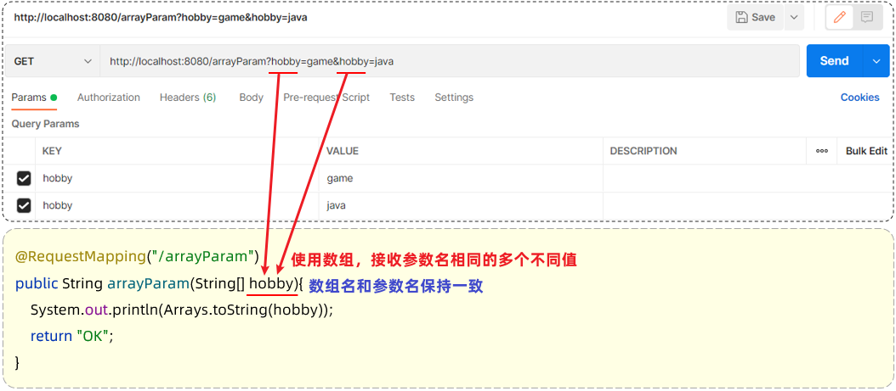
Controller方法：
@RestController
public class RequestController {
//数组集合参数
@RequestMapping("/arrayParam")
public String arrayParam(String[] hobby){
System.out.println(Arrays.toString(hobby));
return "OK";
}
}
Postman测试：
在前端请求时，有两种传递形式：
方式一： xxxxxxxxxx?hobby=game&hobby=java
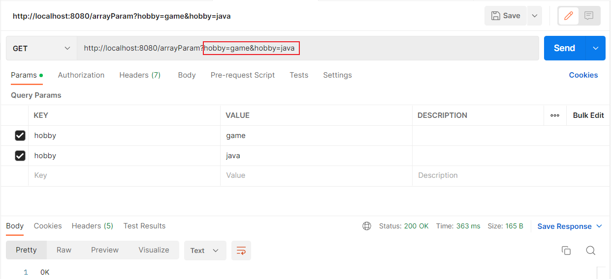
方式二：xxxxxxxxxxxxx?hobby=game,java
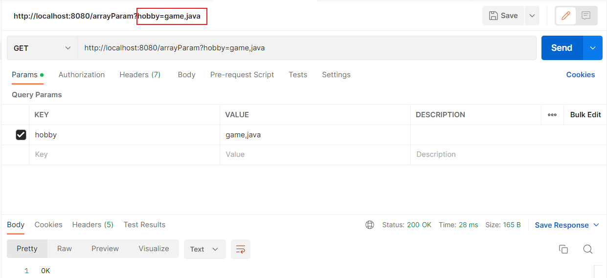
1.4.2 ==集合==
集合参数：请求参数名与形参集合对象名相同且请求参数为多个，@RequestParam 绑定参数关系
默认情况下，请求中参数名相同的多个值，是封装到数组。如果要封装到集合，要使用@RequestParam绑定参数关系
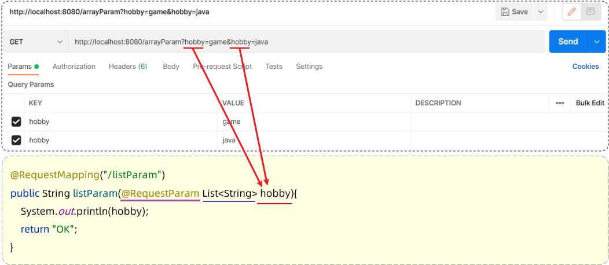
Controller方法：
@RestController
public class RequestController {
//数组集合参数
@RequestMapping("/listParam")
public String listParam(@RequestParam List<String> hobby){
System.out.println(hobby);
return "OK";
}
}
Postman测试：
方式一： xxxxxxxxxx?hobby=game&hobby=java
方式二：xxxxxxxxxxxxx?hobby=game,java
1.5 ==日期参数==
上述演示的都是一些普通的参数，在一些特殊的需求中，可能会涉及到日期类型数据的封装。比如，如下需求：
因为日期的格式多种多样（如：2022-12-12 10:05:45 、2022/12/12 10:05:45），那么对于日期类型的参数在进行封装的时候，需要通过@DateTimeFormat注解，以及其pattern属性来设置日期的格式。

- @DateTimeFormat注解的pattern属性中指定了哪种日期格式，前端的日期参数就必须按照指定的格式传递。
- 后端controller方法中，需要使用Date类型或LocalDateTime类型，来封装传递的参数。
Controller方法：
@RestController
public class RequestController {
//日期时间参数
@RequestMapping("/dateParam")
public String dateParam(@DateTimeFormat(pattern = "yyyy-MM-dd HH:mm:ss") LocalDateTime updateTime){
System.out.println(updateTime);
return "OK";
}
}
Postman测试：
1.6 ==JSON参数==
在学习前端技术时，我们有讲到过JSON，而在前后端进行交互时，如果是比较复杂的参数，前后端通过会使用JSON格式的数据进行传输。 （JSON是开发中最常用的前后端数据交互方式）
我们学习JSON格式参数，主要从以下两个方面着手：
Postman在发送请求时，如何传递json格式的请求参数在服务端的controller方法中，如何接收json格式的请求参数
Postman发送JSON格式数据：
服务端Controller方法接收JSON格式数据：
- 传递json格式的参数，在Controller中会使用实体类进行封装。
- 封装规则：JSON数据键名与形参对象属性名相同，定义POJO类型形参即可接收参数。需要使用 @RequestBody标识。
- @RequestBody注解：将JSON数据映射到形参的实体类对象中（JSON中的key和实体类中的属性名保持一致）
实体类：Address
public class Address {
private String province;
private String city;
//省略GET , SET 方法
}
实体类：User
public class User {
private String name;
private Integer age;
private Address address;
//省略GET , SET 方法
}
Controller方法：
@RestController
public class RequestController {
//JSON参数
@RequestMapping("/jsonParam")
public String jsonParam(@RequestBody User user){
System.out.println(user);
return "OK";
}
}
Postman测试：
1.7 ==路径参数==
传统的开发中请求参数是放在请求体(POST请求)传递或跟在URL后面通过?key=value的形式传递(GET请求)。
在现在的开发中，经常还会直接在请求的URL中传递参数。例如：
http://localhost:8080/user/1
http://localhost:880/user/1/0
上述的这种传递请求参数的形式呢，我们称之为：路径参数。
学习路径参数呢，主要掌握在后端的controller方法中，如何接收路径参数。
路径参数：
- ==前端：通过请求URL直接传递参数==
- ==后端：使用{…}来标识该路径参数，需要使用@PathVariable获取路径参数==
Controller方法：
@RestController
public class RequestController {
//路径参数
@RequestMapping("/path/{id}")
public String pathParam(@PathVariable Integer id){
System.out.println(id);
return "OK";
}
}
Postman测试：
传递多个路径参数：
Postman：
Controller方法：
@RestController
public class RequestController {
//路径参数
@RequestMapping("/path/{id}/{name}")
public String pathParam2(@PathVariable Integer id, @PathVariable String name){
System.out.println(id+ " : " +name);
return "OK";
}
}
2. ==响应==
前面我们学习过HTTL协议的交互方式：请求响应模式（有请求就有响应）
那么Controller程序呢，除了接收请求外，还可以进行响应。
2.1 @ResponseBody
在我们前面所编写的controller方法中，都已经设置了响应数据。
==controller方法中的return的结果，怎么就可以响应给浏览器呢？==
答案：使用@ResponseBody注解
@ResponseBody注解：
- 类型：方法注解、类注解
- 位置：书写在Controller方法上或类上
- 作用：将方法返回值直接响应给浏览器
- 如果返回值类型是实体对象/集合，将会转换为JSON格式后在响应给浏览器
但是在我们所书写的Controller中，只在类上添加了@RestController注解、方法添加了@RequestMapping注解，并没有使用@ResponseBody注解，怎么给浏览器响应呢？
@RestController
public class HelloController {
@RequestMapping("/hello")
public String hello(){
System.out.println("Hello World ~");
return "Hello World ~";
}
}
原因：在类上添加的@RestController注解，是一个组合注解。
- @RestController = @Controller + @ResponseBody
@RestController源码：
@Target({ElementType.TYPE}) //元注解（修饰注解的注解）
@Retention(RetentionPolicy.RUNTIME) //元注解
@Documented //元注解
@Controller
@ResponseBody
public @interface RestController {
@AliasFor(
annotation = Controller.class
)
String value() default "";
}
结论：在类上添加@RestController就相当于添加了@ResponseBody注解。
- 类上有@RestController注解或@ResponseBody注解时：表示当前类下所有的方法返回值做为响应数据
- 方法的返回值，如果是一个POJO对象或集合时，会先转换为JSON格式，在响应给浏览器
下面我们来测试下响应数据：
@RestController
public class ResponseController {
//响应字符串
@RequestMapping("/hello")
public String hello(){
System.out.println("Hello World ~");
return "Hello World ~";
}
//响应实体对象
@RequestMapping("/getAddr")
public Address getAddr(){
Address addr = new Address();//创建实体类对象
addr.setProvince("广东");
addr.setCity("深圳");
return addr;
}
//响应集合数据
@RequestMapping("/listAddr")
public List<Address> listAddr(){
List<Address> list = new ArrayList<>();//集合对象
Address addr = new Address();
addr.setProvince("广东");
addr.setCity("深圳");
Address addr2 = new Address();
addr2.setProvince("陕西");
addr2.setCity("西安");
list.add(addr);
list.add(addr2);
return list;
}
}
在服务端响应了一个对象或者集合，那私前端获取到的数据是什么样子的呢？我们使用postman发送请求来测试下。测试效果如下：
2.2 ==统一响应结果==
大家有没有发现一个问题，我们在前面所编写的这些Controller方法中，返回值各种各样，没有任何的规范。
如果我们开发一个大型项目，项目中controller方法将成千上万，使用上述方式将造成整个项目难以维护。那在真实的项目开发中是什么样子的呢？
在真实的项目开发中，无论是哪种方法，我们都会定义一个统一的返回结果。方案如下：
前端：只需要按照统一格式的返回结果进行解析(仅一种解析方案)，就可以拿到数据。
统一的返回结果使用类来描述，在这个结果中包含：
-
响应状态码：当前请求是成功，还是失败
-
状态码信息：给页面的提示信息
-
返回的数据：给前端响应的数据（字符串、对象、集合）
定义在一个实体类Result来包含以上信息。代码如下：
public class Result {
private Integer code;//响应码，1 代表成功; 0 代表失败
private String msg; //响应码 描述字符串
private Object data; //返回的数据
public Result() { }
public Result(Integer code, String msg, Object data) {
this.code = code;
this.msg = msg;
this.data = data;
}
public Integer getCode() {
return code;
}
public void setCode(Integer code) {
this.code = code;
}
public String getMsg() {
return msg;
}
public void setMsg(String msg) {
this.msg = msg;
}
public Object getData() {
return data;
}
public void setData(Object data) {
this.data = data;
}
//增删改 成功响应(不需要给前端返回数据)
public static Result success(){
return new Result(1,"success",null);
}
//查询 成功响应(把查询结果做为返回数据响应给前端)
public static Result success(Object data){
return new Result(1,"success",data);
}
//失败响应
public static Result error(String msg){
return new Result(0,msg,null);
}
}
改造Controller：
@RestController
public class ResponseController {
//响应统一格式的结果
@RequestMapping("/hello")
public Result hello(){
System.out.println("Hello World ~");
//return new Result(1,"success","Hello World ~");
return Result.success("Hello World ~");
}
//响应统一格式的结果
@RequestMapping("/getAddr")
public Result getAddr(){
Address addr = new Address();
addr.setProvince("广东");
addr.setCity("深圳");
return Result.success(addr);
}
//响应统一格式的结果
@RequestMapping("/listAddr")
public Result listAddr(){
List<Address> list = new ArrayList<>();
Address addr = new Address();
addr.setProvince("广东");
addr.setCity("深圳");
Address addr2 = new Address();
addr2.setProvince("陕西");
addr2.setCity("西安");
list.add(addr);
list.add(addr2);
return Result.success(list);
}
}
使用Postman测试：
2.3 案例
下面我们通过一个案例，来加强对请求响应的学习。
2.3.1 需求说明
需求：加载并解析xml文件中的数据，完成数据处理，并在页面展示
- 获取员工数据，返回统一响应结果，在页面渲染展示
2.3.2 准备工作
案例准备：
-
XML文件
- 已经准备好(emp.xml)，直接导入进来，放在 src/main/resources目录下
-
工具类
- 已经准备好解析XML文件的工具类，无需自己实现
- 直接在创建一个包 com.itheima.utils ，然后将工具类拷贝进来
-
前端页面资源
- 已经准备好，直接拷贝进来，放在src/main/resources下的static目录下
Springboot项目的静态资源(html，css，js等前端资源)默认存放目录为：classpath:/static 、 classpath:/public、 classpath:/resources
在SpringBoot项目中，静态资源默认可以存放的目录：
- classpath:/static/
- classpath:/public/
- classpath:/resources/
- classpath:/META-INF/resources/
classpath：
- 代表的是类路径，在maven的项目中，其实指的就是 src/main/resources 或者 src/main/java，但是java目录是存放java代码的，所以相关的配置文件及静态资源文档，就放在 src/main/resources下。
2.3.3 实现步骤
-
在pom.xml文件中引入dom4j的依赖，用于解析XML文件
<dependency> <groupId>org.dom4j</groupId> <artifactId>dom4j</artifactId> <version>2.1.3</version> </dependency> -
引入资料中提供的：解析XML的工具类XMLParserUtils、实体类Emp、XML文件emp.xml
-
引入资料中提供的静态页面文件，放在resources下的static目录下
-
创建EmpController类，编写Controller程序，处理请求，响应数据
2.3.4 代码实现
Controller代码：
@RestController
public class EmpController {
@RequestMapping("/listEmp")
public Result list(){
//1. 加载并解析emp.xml
String file = this.getClass().getClassLoader().getResource("emp.xml").getFile();
//System.out.println(file);
List<Emp> empList = XmlParserUtils.parse(file, Emp.class);
//2. 对数据进行转换处理 - gender, job
empList.stream().forEach(emp -> {
//处理 gender 1: 男, 2: 女
String gender = emp.getGender();
if("1".equals(gender)){
emp.setGender("男");
}else if("2".equals(gender)){
emp.setGender("女");
}
//处理job - 1: 讲师, 2: 班主任 , 3: 就业指导
String job = emp.getJob();
if("1".equals(job)){
emp.setJob("讲师");
}else if("2".equals(job)){
emp.setJob("班主任");
}else if("3".equals(job)){
emp.setJob("就业指导");
}
});
//3. 响应数据
return Result.success(empList);
}
}
统一返回结果实体类：
public class Result {
private Integer code ;//1 成功 , 0 失败
private String msg; //提示信息
private Object data; //数据 date
public Result() {
}
public Result(Integer code, String msg, Object data) {
this.code = code;
this.msg = msg;
this.data = data;
}
public Integer getCode() {
return code;
}
public void setCode(Integer code) {
this.code = code;
}
public String getMsg() {
return msg;
}
public void setMsg(String msg) {
this.msg = msg;
}
public Object getData() {
return data;
}
public void setData(Object data) {
this.data = data;
}
public static Result success(Object data){
return new Result(1, "success", data);
}
public static Result success(){
return new Result(1, "success", null);
}
public static Result error(String msg){
return new Result(0, msg, null);
}
}
2.3.5 测试
代码编写完毕之后，我们就可以运行引导类，启动服务进行测试了。
使用Postman测试：
打开浏览器，在浏览器地址栏输入： http://localhost:8080/emp.html
2.3.6 问题分析
上述案例的功能，我们虽然已经实现，但是呢，我们会发现案例中：解析XML数据，获取数据的代码，处理数据的逻辑的代码，给页面响应的代码全部都堆积在一起了，全部都写在controller方法中了。

当前程序的这个业务逻辑还是比较简单的，如果业务逻辑再稍微复杂一点，我们会看到Controller方法的代码量就很大了。
-
当我们要修改操作数据部分的代码，需要改动Controller
-
当我们要完善逻辑处理部分的代码，需要改动Controller
-
当我们需要修改数据响应的代码，还是需要改动Controller
这样呢，就会造成我们整个工程代码的复用性比较差，而且代码难以维护。 那如何解决这个问题呢？其实在现在的开发中，有非常成熟的解决思路，那就是分层开发。
3. 分层解耦
3.1 三层架构
3.1.1 介绍
在我们进行程序设计以及程序开发时，尽可能让每一个接口、类、方法的职责更单一些（单一职责原则）。
单一职责原则：一个类或一个方法，就只做一件事情，只管一块功能。
这样就可以让类、接口、方法的复杂度更低，可读性更强，扩展性更好，也更利用后期的维护。
我们之前开发的程序呢，并不满足单一职责原则。下面我们来分析下之前的程序：

那其实我们上述案例的处理逻辑呢，从组成上看可以分为三个部分：
- 数据访问：负责业务数据的维护操作，包括增、删、改、查等操作。
- 逻辑处理：负责业务逻辑处理的代码。
- 请求处理、响应数据：负责，接收页面的请求，给页面响应数据。
按照上述的三个组成部分，在我们项目开发中呢，可以将代码分为三层：
- Controller：控制层。接收前端发送的请求，对请求进行处理，并响应数据。
- Service：业务逻辑层。处理具体的业务逻辑。
- Dao：数据访问层(Data Access Object)，也称为持久层。负责数据访问操作，包括数据的增、删、改、查。
基于三层架构的程序执行流程：
- 前端发起的请求，由Controller层接收（Controller响应数据给前端）
- Controller层调用Service层来进行逻辑处理（Service层处理完后，把处理结果返回给Controller层）
- Serivce层调用Dao层（逻辑处理过程中需要用到的一些数据要从Dao层获取）
- Dao层操作文件中的数据（Dao拿到的数据会返回给Service层）
思考：按照三层架构的思想，如何要对业务逻辑(Service层)进行变更，会影响到Controller层和Dao层吗？
答案：不会影响。 （程序的扩展性、维护性变得更好了）
3.1.2 ==代码拆分==
我们使用三层架构思想，来改造下之前的程序：
- 控制层包名：xxxx.controller
- 业务逻辑层包名：xxxx.service
- 数据访问层包名：xxxx.dao
**控制层：**接收前端发送的请求，对请求进行处理，并响应数据
@RestController
public class EmpController {
//业务层对象
private EmpService empService = new EmpServiceA();
@RequestMapping("/listEmp")
public Result list(){
//1. 调用service层, 获取数据
List<Emp> empList = empService.listEmp();
//3. 响应数据
return Result.success(empList);
}
}
**业务逻辑层：**处理具体的业务逻辑
- 业务接口
//业务逻辑接口（制定业务标准）
public interface EmpService {
//获取员工列表
public List<Emp> listEmp();
}
- 业务实现类
//业务逻辑实现类（按照业务标准实现）
public class EmpServiceA implements EmpService {
//dao层对象
private EmpDao empDao = new EmpDaoA();
@Override
public List<Emp> listEmp() {
//1. 调用dao, 获取数据
List<Emp> empList = empDao.listEmp();
//2. 对数据进行转换处理 - gender, job
empList.stream().forEach(emp -> {
//处理 gender 1: 男, 2: 女
String gender = emp.getGender();
if("1".equals(gender)){
emp.setGender("男");
}else if("2".equals(gender)){
emp.setGender("女");
}
//处理job - 1: 讲师, 2: 班主任 , 3: 就业指导
String job = emp.getJob();
if("1".equals(job)){
emp.setJob("讲师");
}else if("2".equals(job)){
emp.setJob("班主任");
}else if("3".equals(job)){
emp.setJob("就业指导");
}
});
return empList;
}
}
**数据访问层：**负责数据的访问操作，包含数据的增、删、改、查
- 数据访问接口
//数据访问层接口（制定标准）
public interface EmpDao {
//获取员工列表数据
public List<Emp> listEmp();
}
- 数据访问实现类
//数据访问实现类
public class EmpDaoA implements EmpDao {
@Override
public List<Emp> listEmp() {
//1. 加载并解析emp.xml
String file = this.getClass().getClassLoader().getResource("emp.xml").getFile();
System.out.println(file);
List<Emp> empList = XmlParserUtils.parse(file, Emp.class);
return empList;
}
}

三层架构的好处：
- 复用性强
- 便于维护
- 利用扩展
3.2 分层解耦
刚才我们学习过程序分层思想了，接下来呢，我们来学习下程序的解耦思想。
解耦：解除耦合。
3.2.1 耦合问题
首先需要了解软件开发涉及到的两个概念：内聚和耦合。
-
内聚：软件中各个功能模块内部的功能联系。
-
耦合：衡量软件中各个层/模块之间的依赖、关联的程度。
软件设计原则：高内聚低耦合。
高内聚指的是：一个模块中各个元素之间的联系的紧密程度，如果各个元素(语句、程序段)之间的联系程度越高，则内聚性越高，即 “高内聚”。
低耦合指的是：软件中各个层、模块之间的依赖关联程序越低越好。
程序中高内聚的体现：
- EmpServiceA类中只编写了和员工相关的逻辑处理代码
程序中耦合代码的体现：
- ==把业务类变为EmpServiceB时，需要修改controller层中的代码==

高内聚、低耦合的目的是使程序模块的可重用性、移植性大大增强。
3.2.2 ==解耦思路==
之前我们在编写代码时，需要什么对象，就直接new一个就可以了。 这种做法呢，层与层之间代码就耦合了，当service层的实现变了之后， 我们还需要修改controller层的代码。

那应该怎么解耦呢？
- ==首先不能在EmpController中使用new对象==。代码如下：
- 此时，就存在另一个问题了，不能new，就意味着没有业务层对象（程序运行就报错），怎么办呢？
- 我们的解决思路是：
- 提供一个容器，容器中存储一些对象(例：EmpService对象)
- controller程序从容器中获取EmpService类型的对象
- 我们的解决思路是：
我们想要实现上述解耦操作，就涉及到Spring中的两个核心概念：
-
控制反转： Inversion Of Control，简称IOC。对象的创建控制权由程序自身转移到外部（容器），这种思想称为控制反转。
对象的创建权由程序员主动创建转移到容器(由容器创建、管理对象)。这个容器称为：IOC容器或Spring容器
-
依赖注入： Dependency Injection，简称DI。容器为应用程序提供运行时，所依赖的资源，称之为依赖注入。
程序运行时需要某个资源，此时容器就为其提供这个资源。
例：EmpController程序运行时需要EmpService对象，Spring容器就为其提供并注入EmpService对象
IOC容器中创建、管理的对象，称之为：bean对象
3.3 IOC&DI
上面我们引出了Spring中IOC和DI的基本概念，下面我们就来具体学习下IOC和DI的代码实现。
3.3.1 IOC&DI入门
任务：完成Controller层、Service层、Dao层的代码解耦
- 思路：
- 删除Controller层、Service层中new对象的代码
- Service层及Dao层的实现类，交给IOC容器管理
- 为Controller及Service注入运行时依赖的对象
- Controller程序中注入依赖的Service层对象
- Service程序中注入依赖的Dao层对象
第1步：删除Controller层、Service层中new对象的代码
第2步：Service层及Dao层的实现类，交给IOC容器管理
- 使用Spring提供的注解：@Component ，就可以实现类交给IOC容器管理
第3步：为Controller及Service注入运行时依赖的对象
- 使用Spring提供的注解：@Autowired ，就可以实现程序运行时IOC容器自动注入需要的依赖对象
完整的三层代码：
- Controller层：
@RestController
public class EmpController {
@Autowired //运行时,从IOC容器中获取该类型对象,赋值给该变量
private EmpService empService ;
@RequestMapping("/listEmp")
public Result list(){
//1. 调用service, 获取数据
List<Emp> empList = empService.listEmp();
//3. 响应数据
return Result.success(empList);
}
}
- Service层：
@Component //将当前对象交给IOC容器管理,成为IOC容器的bean
public class EmpServiceA implements EmpService {
@Autowired //运行时,从IOC容器中获取该类型对象,赋值给该变量
private EmpDao empDao ;
@Override
public List<Emp> listEmp() {
//1. 调用dao, 获取数据
List<Emp> empList = empDao.listEmp();
//2. 对数据进行转换处理 - gender, job
empList.stream().forEach(emp -> {
//处理 gender 1: 男, 2: 女
String gender = emp.getGender();
if("1".equals(gender)){
emp.setGender("男");
}else if("2".equals(gender)){
emp.setGender("女");
}
//处理job - 1: 讲师, 2: 班主任 , 3: 就业指导
String job = emp.getJob();
if("1".equals(job)){
emp.setJob("讲师");
}else if("2".equals(job)){
emp.setJob("班主任");
}else if("3".equals(job)){
emp.setJob("就业指导");
}
});
return empList;
}
}
Dao层：
@Component //将当前对象交给IOC容器管理,成为IOC容器的bean
public class EmpDaoA implements EmpDao {
@Override
public List<Emp> listEmp() {
//1. 加载并解析emp.xml
String file = this.getClass().getClassLoader().getResource("emp.xml").getFile();
System.out.println(file);
List<Emp> empList = XmlParserUtils.parse(file, Emp.class);
return empList;
}
}
运行测试：
- 启动SpringBoot引导类，打开浏览器，输入：http://localhost:8080/emp.html
3.3.2 ==IOC详解==
通过IOC和DI的入门程序呢，我们已经基本了解了IOC和DI的基础操作。接下来呢，我们学习下IOC控制反转和DI依赖注入的细节。
3.3.2.1 bean的声明
==前面我们提到IOC控制反转，就是将对象的控制权交给Spring的IOC容器，由IOC容器创建及管理对象。IOC容器创建的对象称为bean对象==。
在之前的入门案例中，要把某个对象交给IOC容器管理，需要在类上添加一个注解：@Component
而Spring框架为了更好的标识web应用程序开发当中，bean对象到底归属于哪一层，又提供了**@Component的衍生注解：**
- @Controller （标注在控制层类上）
- @Service （标注在业务层类上）
- @Repository （标注在数据访问层类上）
@Repository主要用于Spring框架中的数据访问层，而@Mapper则是MyBatis框架中用于定义数据访问接口的注解。这两者在不同的框架和功能背景下起到了不同的作用。
修改入门案例代码：
- Controller层：
@RestController //@RestController = @Controller + @ResponseBody
public class EmpController {
@Autowired //运行时,从IOC容器中获取该类型对象,赋值给该变量
private EmpService empService ;
@RequestMapping("/listEmp")
public Result list(){
//1. 调用service, 获取数据
List<Emp> empList = empService.listEmp();
//3. 响应数据
return Result.success(empList);
}
}
- Service层：
@Service
public class EmpServiceA implements EmpService {
@Autowired //运行时,从IOC容器中获取该类型对象,赋值给该变量
private EmpDao empDao ;
@Override
public List<Emp> listEmp() {
//1. 调用dao, 获取数据
List<Emp> empList = empDao.listEmp();
//2. 对数据进行转换处理 - gender, job
empList.stream().forEach(emp -> {
//处理 gender 1: 男, 2: 女
String gender = emp.getGender();
if("1".equals(gender)){
emp.setGender("男");
}else if("2".equals(gender)){
emp.setGender("女");
}
//处理job - 1: 讲师, 2: 班主任 , 3: 就业指导
String job = emp.getJob();
if("1".equals(job)){
emp.setJob("讲师");
}else if("2".equals(job)){
emp.setJob("班主任");
}else if("3".equals(job)){
emp.setJob("就业指导");
}
});
return empList;
}
}
Dao层：
@Repository
public class EmpDaoA implements EmpDao {
@Override
public List<Emp> listEmp() {
//1. 加载并解析emp.xml
String file = this.getClass().getClassLoader().getResource("emp.xml").getFile();
System.out.println(file);
List<Emp> empList = XmlParserUtils.parse(file, Emp.class);
return empList;
}
}
要把某个对象交给IOC容器管理，需要在对应的类上加上如下注解之一：
| 注解 | 说明 | 位置 |
|---|---|---|
| @Controller | @Component的衍生注解 | 标注在控制器类上 |
| @Service | @Component的衍生注解 | 标注在业务类上 |
| @Repository | @Component的衍生注解 | 标注在数据访问类上（由于与mybatis整合，用的少） |
| @Component | 声明bean的基础注解 | 不属于以上三类时，用此注解 |
查看源码：
在IOC容器中，每一个Bean都有一个属于自己的名字，可以通过注解的value属性指定bean的名字。如果没有指定，默认为类名首字母小写。
注意事项:
- 声明bean的时候，可以通过value属性指定bean的名字，如果没有指定，默认为类名首字母小写。
- 使用以上四个注解都可以声明bean，但是在springboot集成web开发中，声明控制器bean只能用@Controller。
3.3.2.2 ==组件扫描==
问题：使用前面学习的四个注解声明的bean，一定会生效吗？
答案：不一定。（原因：bean想要生效，还需要被组件扫描）
下面我们通过修改项目工程的目录结构，来测试bean对象是否生效：
运行程序后，报错：
为什么没有找到bean对象呢？
- 使用四大注解声明的bean，要想生效，还需要被组件扫描注解@ComponentScan扫描
@ComponentScan注解虽然没有显式配置，但是实际上已经包含在了引导类声明注解 @SpringBootApplication 中，==默认扫描的范围是SpringBoot启动类所在包及其子包==。
- 解决方案：手动添加@ComponentScan注解，指定要扫描的包 （==仅做了解，不推荐==）
推荐做法（如下图）：
- 将我们定义的controller，service，dao这些包呢，都放在引导类所在包com.itheima的子包下，这样我们定义的bean就会被自动的扫描到
3.3.3 ==DI详解==
上一小节我们讲解了控制反转IOC的细节，接下来呢，我们学习依赖注解DI的细节。
依赖注入，是指IOC容器要为应用程序去提供运行时所依赖的资源，而资源指的就是对象。
在入门程序案例中，我们使用了@Autowired这个注解，完成了依赖注入的操作，而这个Autowired翻译过来叫：自动装配。
@Autowired注解，默认是按照类型进行自动装配的（去IOC容器中找某个类型的对象，然后完成注入操作）
入门程序举例：在EmpController运行的时候，就要到IOC容器当中去查找EmpService这个类型的对象，而我们的IOC容器中刚好有一个EmpService这个类型的对象，所以就找到了这个类型的对象完成注入操作。
那如果在IOC容器中，存在多个相同类型的bean对象，会出现什么情况呢？
- 程序运行会报错
如何解决上述问题呢？Spring提供了以下几种解决方案：
-
@Primary
-
@Qualifier
-
@Resource
使用@Primary注解：当存在多个相同类型的Bean注入时，加上@Primary注解，来确定默认的实现。
使用@Qualifier注解：指定当前要注入的bean对象。 在@Qualifier的value属性中，指定注入的bean的名称。
- @Qualifier注解不能单独使用，必须配合@Autowired使用
==使用@Resource注解：是按照bean的名称进行注入。通过name属性指定要注入的bean的名称。==
面试题 ： @Autowird 与 @Resource的区别
- @Autowired 是spring框架提供的注解，而@Resource是JDK提供的注解
- @Autowired 默认是按照类型注入，而@Resource是按照名称注入